Södermalm i tid och rum. Stockholm
STORMAKTSTIDENS SÖDERMALM,STADSPLANEREGLERINGEN OCH DEN NYA BEBYGGELSEN
Den expansionsdrift och djärva nybyggaranda, som genomströmmade hela det svenska samhället
vid stormaktstidens början, kom också i hög grad Stockholm till godo. Först nu genom hovets
stationering och centralförvaltningens organisation, med adelns fasta bosättning som följd, blev
Stockholm i egentlig mening landets huvudstad. Örlogsstationen och den militära beredskapen,
liksom det merkantila uppsvinget i samband med den växande dominansen över Östersjön,
utvecklade andra befolkningselement, som i hög grad satte sin prägel på stadens liv. Typiskt för
tiden var också en generös befolkningspolitik, som till ovärderligt gagn för det svenska samhället
gynnade inflyttning av kapitalstarka företagare och duglig arbetskraft, icke minst av holländsk
extraktion.
Den väldiga befolkningsökningen under 1620-talet och de närmast följande decennierna - man beräknar, att stadens folkmängd fyrdubblades under tiden till början av 1660-talet - ställde myndigheterna inför planeringsproblem av proportionellt betydligt större storleksordning än dem, som skapas i våra dagar av den fortskridande urbaniseringen, ehuru de i äldre tid voro lättare att lösa tack vare bebyggelsens primitiva karaktär och de rustika trafikförhållandena. Hand i hand med tvånget att bereda plats för den växande befolkningen gick den nymornade ambitionen att skapa om den ännu i många avseenden medeltidsaktiga småstaden till en värdig och imponerande huvudstad i den nya stormakten Sverige.
Då det redan tidigare var snålt om utrymmet i stadens centrala delar, var det klart, att den starka befolkningstillväxten skulle leda till en ökad utflyttning till malmarna. Vad Södermalm beträffar, tillkommo också andra faktorer. Den insulära stadsbons länge något nedlåtande syn på denna förstad, vars grönområden visserligen voro tacknämliga för mulbete och trädgårdsodling men dit man gärna hänvisade folk och hanteringar av mera lågklassig och besvärande typ, fick vika för en mera positiv inställning, till sist kulminerande i Karl X Gustavs stolta dröm att förvandla Södermalm till hela stadens sociala och administrativa medelpunkt.
Olika motiv torde ha medverkat till denna nya inställning. Luften var väl litet lättare att andas på Söders höjder än i de trånga och smutsiga gränderna i stadens inre delar. Man kan väl heller icke ha varit alldeles okänslig för de strålande perspektiv, som från Södra Bergen öppna sig över Riddarfjärden och Saltsjön och som i våra dagar göra bostadsområden vid exempelvis Badstugatan och Stigberget så eftertraktade, icke minst av konstnärerna.
Adelsmännen, vilka nu som bisittare i ämbetsverken hade att inrätta sig som bofasta stockholmare, kunde i någon mån få utrymme för den lantliga livsföring, som de voro vana vid, i stadens mera orörda utkanter. Väl icke utan påverkan från detta håll kom naturen att spela en större roll också i de gemena stadsbornas livskänsla, vilket kom till uttryck, besläktade med vår egen tids intresse för kolonistugor och sommarnöjen. De inflyttade utlänningarna drogos - icke minst av religiösa skäl - till den friare atmosfären i stadens ytterområden.
|
Planerna på en genomgripande reglering av gatunätet och byggnadssättet i den framväxande
storstaden Stockholm går som så mycket annat betydelsefullt nytt i stormaktstidens svenska samhälle
tillbaka på Gustav Adolfs regeringstid. Den stora branden år 1625, då en femtedel av staden ödelades,
tycks ha gett den direkta anledningen till de »desseiner», som redan nu gjordes upp och senare ofta
åberopades. I full utsträckning förverkligades dessa planer under den följande förmyndarregeringen,
sedan Claes Fleming med år 1634 inlett sin betydelsefulla ämbetsperiod som stadens överståthållare.
Två år efter Flemings utnämning uppdrogs åt generalkvartermästaren Olof Hansson (Örnehufvudh) att
utarbeta en »dessein på gatorna, så på malmarna som här i staden, tagandes dem så breda, som han
någonsin kan».
Till Södermalm utsträcktes stadsplaneregleringen först på ett relativt sent stadium: förberedelserna sattes i gång under år 1641. En rimlig anledning kan ha varit, att man ville avvakta slussområdets färdigställande. De medeltida försvarsanläggningarna mellan Stadsholmen och Södermalm förlorade på Gustav Adolfs tid sin militära betydelse, då försvarsgördeln vidgades till att omfatta hela malmen med de planerade skansarna vid nuvarande Skans- och Danvikstull som viktigaste stödjepunkter. Inre och Yttre Södertorn revos på 1630-talet, det senare för att bereda plats för den första slussanläggningen mellan Mälaren och Saltsjön. Den byggdes under ledning av två holländska timmermän med till stor del holländsk arbetskraft och blev färdig att tas i bruk 1642. |
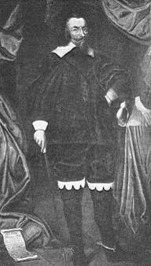 Cleas Fleming |
Av försvarsanläggningarna vid Söderström kvarstod sedan endast den av Gustav Vasa på strandkanten av malmen uppförda rondellen, anknytande till den djupa försvarsgrav, kallad Stadsgraven, som tillkommit på 1520-talet, då danskarna innehade Stockholm. Ungefär ett halvt sekel senare hade denna anläggning, som fått överta namnet Yttre Söderport, försetts med det nya porttorn med lanternin och spira, som sedan under mer än hundra år utgjorde ett framträdande inslag i stadsbilden kring Söderström. En medelpunkt för ett pulserande arbetsliv skapades här, då järnvågen 1662 flyttades till Stadsgraven, från den tiden kallad Järngraven. Kvarstående rester av rondellen, inbakade i senare byggnadsverk, påträffades så sent som vid sista slussregleringen på 1930-talet.
|
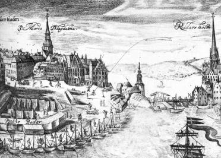 
|
Över den första slussen byggdes på 1640-talet en ny vindbro, men den enda förbindelsen mellan
Stadsholmen och Södermalm utgjordes fortfarande - såsom framgår av Wolfgang Hartmans stick från
år 1650 - av en enkel träbro, som från Järntorgsgatans mynning över Slussholmen och genom Yttre
Söderport ledde upp till Södermalmstorg. En mera ändamålsenlig kommunikation åstadkoms först vid
århundradets slut efter Jean de la Vallees förslag, samtidigt som en ny bro byggdes över järngraven
efter ritningar av Tessin d.y.
På vardera sidan av Söderströms nordligaste led, som redan under medeltiden utnyttjats för kvarnanläggningar, byggdes 1646 nya kvarnhus med karakteristiska höga trappgavlar. |
|
Planläggningen och resultatet av den första stadsplaneregleringen på Södermalm kan till huvuddragen
följas i det bevarade kartmaterialet. Det före regleringen ännu bestående medeltida gatunätet med sina
slingrande vägar och oregelbundna bebyggelseenheter avtecknar sig synnerligen åskådligt på en i
Krigsarkivet förvarad Södermalmskarta med tysk text, till tiden alltså före början av 1640-talet.
Omedelbart före stadsplaneregleringens genomförande på Södermalm bör den Stockholmskarta ha tillkommit, där staden i övrigt är reglerad men ej malmen; den förestående uppgiften där antydes, genom att Götgatan med en streckad linje projekterats över den försumpade södra delen av Fatburen. Till ungefär samma tid - sammanhängande med det direkta förberedelsearbetet - bör den karta förläggas, där den nya regleringsplanen lagts över det tidigare medeltida gatunätet. |
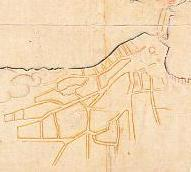 |
 Ca 1642 Ca 1642
|
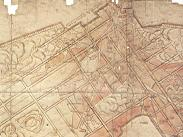  Ca 1641. Över den befintliga Ca 1641. Över den befintliga
|
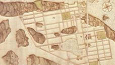  Ca 1647 Ca 1647
|
Regleringens resultat framträder på flera Stockholmskartor från mitten av århundradet. Tidigast i serien är en karta över södra delen av staden, odaterad men bestämd till tiden 1646-47; på ett särskilt tydligt sätt illustreras här, vilka hinder den obändiga Södermalmsnaturen satt för regleringsplanens genomförande. |
|
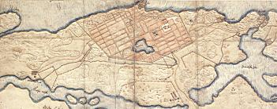  Ca 1655 Ca 1655
|
Mest känd är en av Hildebrand i Stockholm 1897 publicerad karta. Liksom några övriga, tydligen ungefär samtida, bl.a. C. I. Furuträds från 1665, visar den klart gränserna för den första regleringsplanen för malmen. I öster sträckte den sig till Reenstiernas gata, i söder omfattade den i två sneda linjer Fatburssjön och i väster nådde den i sin längsta sträckning fram till Rosenlundsgatan; gränsen markerades här av den gata, som betecknande kallades Yttersta Tvärgatan. Om man undantar det närmaste området väster om Södermalmstorg, har bebyggelsen längs Mälarstranden kunnat inrutas endast trevande och |
Redan kartmaterialet belyser alltså mycket klart de särskilda svårigheter, som förelågo vid en stadsplanereglering av Södermalm. I fråga om den tidigare bebyggelsen, mot vilken man gick fram alldeles hänsynslöst genom avstyckningar och rivningsdekret, voro hindren visserligen snarare mindre än på andra håll. På malmen hade man till största delen att räkna med en primitiv kåkbebyggelse, och man fick god hjälp av vådelden, som verkligen hade en positiv uppgift att fylla vid modernare planering av äldre stadssamhällen. Så mycket mera svårbemästrad var uppgiften att tvinga på den vilda och starkt kuperade Södermalmsnaturen en stadsplan av renässansens stela typ med dess räta gator och fyrkantiga kvarter.
Praktiskt taget hela malmen var omgiven av bergsryggar, och endast på det relativt jämna området i mitten var det tänkbart att lägga ut en regelbunden stadsplan. Möjligheterna att betvinga den motspänstiga naturen voro begränsade före dynamitens tidsålder, även om bergbränning kunde användas i viss utsträckning; de på 1600-talsdessiner från Södermalm ofta förekommande uttrycken »oduglige» eller »ointaglige» berg antyda begränsningen i metodens effektivitet. Flera av de äldsta gatunamnen på västra Södermalm såsom Besvärsbacken, Pustegränd, Trappegränd och »Slemme gatan», antyda vältaligt den kuperade naturens kvardröjande motspänstighet även i det stadsplanelagda området.
Dess bättre har naturens motstånd inte helt brutits ens i vår egen tid, trots att Södermalm i högre grad än någon annan del av Stockholm behandlats med dynamit för att tvingas att anpassa sig efter moderna krav på bostadsområden och trafikleder. De stora områden på malmen, som i våra dagar äro utlagda till grönområden - på västra delen exempelvis Skinnarviks- och Tantoområdena - maskera på sätt och vis stadsplanerarnas kapitulation inför allt för svårtillgängliga höjdpartier.
I äldre tid betecknades dessa höjdpartier i stället ofta av de talrika väderkvarnar, som länge utgjorde ett dekorativt inslag i den traditionella Södersilhuetten. På Tillaei Stockholmskarta från 1733 kan man räkna till icke mindre än 33 väderkvarnar på Södermalm, därav 12 inom dåvarande Maria församling. Till de mera kända där med anor från 1600-talet hörde Stora och Lilla Somens kvarn, uppkallade efter tyske bagaren Mårten Sohm, Christian Hanssons kvarn i trakten av Maria kyrka. som kom att spela en ödesdiger roll vid uppkomsten av den stora Söderbranden 1723, Stora och Lilla Pryssan, belägna norr om Badstugatan, Stora och Lilla Tuna, som bevara rådmannen Petter Thuns namn, och Brinckan, ursprungligen brännvinsbrännaren Måns Brincks kvarn i kvarteret Bergsgruvan större.
|
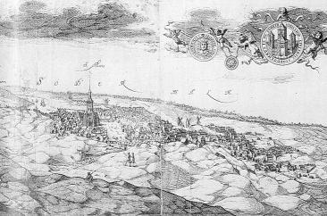  Vy från Skinnarviksbergen österut. Kopparstick av Sigismund von Vogel omkr 1650. Vy från Skinnarviksbergen österut. Kopparstick av Sigismund von Vogel omkr 1650.
|
I rådsprotokollet för den 3 november 1641 läses följande: »Sedan taltes om rifvandet på
Södermalmen, att det Her Claes Flemmings åhoga hemstellas skulle.» Därmed hade getts klarsignal
för stadsplaneregleringens igångsättande i denna del av staden; om företagets djupt ingripande
karaktär ger beslutets formulering klart besked. Redan tidigare samma år hade spiror satts upp på
malmen för de nya gatornas avstickande. Under år 1642 grep man sig an arbetet på allvar: detta år
åberopas senare som det, »då reformation med gatornas och tomternas reglerande begyntes uti Södra
förstaden». Den närmaste ledningen låg i händerna på stadsingenjören Anders Torstensson.
För åtskilliga på malmen betydde stadsplaneregleringen en revolutionerande omvälvning i deras privatliv. Knappast någon kunde vara säker på att icke en vacker dag få mottaga ett förseglat |
Under åren närmast efter regleringens igångsättande överflöda tänkeböckerna och framför allt byggningskollegiets protokoll av ärenden, som röra rivningsdekret och ersättning för mistade tomter. Till de hårt prövade hörde tydligen Michel Sperling. Då han 1647 underrättades om att hans hus på Södermalm skulle rivas och tomten tilldelas en annan, erinrade han om att också hans hus i Stadsgården för icke länge sedan blivit nedrivet och att även hans »wärkeställe» vid Fataburen ödelagts.
Då Gert Rehnskiöld återkom från utlandet, fann han sin föräldragård skövlad: stallet och några andra nya hus hade rivits, fruktträden huggits ner och den dugliga jorden förts bort. Det är endast ett par exempel bland många. De, som förlorade sina tomter, fingo i regel anvisning på nya - men ofta långt bort belägna - och ersättning utgick till rivningskostnaden. Stadens egna myndighetspersoner tycks i allmänhet ha blivit väl tillgodosedda. Byggningsborgmästaren själv, Jakob Grundel, fick icke mindre än sex tomter på Södermalm som vedergällning för andra bortmistade. Åt rådman Wellam Leuhusen, som också förlorat gårdar vid gaturegleringen, uppläts ett tomtområde på Åkaremyran, varvid hänsyn jämväl togs till det stora arbete han ägnat barnhuset. Rådman Johan Larsson Laurinus, en tredje stor fastighetsintressent på Söder, fick gott vederlag vid Hornsgatan och Badstugatan. Som skadestånd för gårdsrivning och en förlorad trädgårdstomt vid Hornsgatan beviljades rådman Henrik Ulf 250 d.s.m. Största delen av beloppet gällde väl här tomten. Då byggningskollegiet vid ett annat tillfälle bestämde skadestånden för ett antal rivna gårdar, rörde det sig om belopp på 10 eller 12 d.s.m.
| Under den följande tiden pressades Torstensson hårt att inleverera en tomtbok över malmen. Slutgiltigt och detaljerat redovisad blev 1600-talets stora stadsreglering först i den ur historisk synpunkt utomordentligt värdefulla tomtbok, som Johan Olofsson Holm grep sig an med att utarbeta, sedan han den 19 september 1671 utnämnts till stadsingenjör, närmast med uppgift »att göra en dessein över vägen vid Hornsgatan ifrån bron och över allt det som är obebyggt». Liksom på Norrmalm byggde stadsplanen för den södra malmen på två stora stråkgator, ehuru här icke lagda parallellt utan vinkelrätt mot varandra. Parallellt eller vinkelrätt till de två huvudgatorna drogos de övriga gatorna fram. |
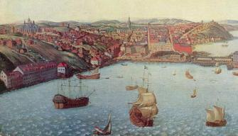  Oljemålning av okänd konstnär från omkr 1700. Södermalmstorg, Stadsgården, Katarina och Maria Magdalena, Horns- och Brännkyrkagatorna västerut. Oljemålning av okänd konstnär från omkr 1700. Södermalmstorg, Stadsgården, Katarina och Maria Magdalena, Horns- och Brännkyrkagatorna västerut.
|
Det monumentala torg, som tidssmaken fordrade, förlades till malmens uppfart. Här hade redan under medeltiden funnits ett oregelbundet torg, kallat Malmtorget. Planerna på utformandet av det nya Södermalmstorget tycks gå tillbaka till tiden före den egentliga stadsregleringen, då staden redan 1632 bytte till sig tomter vid denna plats. Torget stenlades 1637-39 och fick under en tid tjänstgöra också som avrättningsplats. Under 1630- och 1640-talen fick torget sin regelbundna utsträckning i samband med planerandet av en värdig bebyggelse.
I samband med stadsplaneregleringens fortskridande på 1640-talet börja de nya gatunamnen dyka upp. Tidigare hade endast förekommit enstaka sådana (t.ex. Badstugatan och Repslagaregatan). Många av de nya namnen, av vilka en del dess bättre lyckats överleva till vår egen tid, ha sprungit direkt fram ur själva stadsmiljön och ha på det sättet ett stort historiskt intresse. Karakteristiskt är annars, hur föga stabilt det första namnskicket var, liksom att samma namn under olika tider kunde beteckna olika sträckningar av samma gata.
Som Ståhle (Stockholms gatunamn) framhållit tala vägnamnen i regel om vart vägen leder: Götgatan betydde vägen, som ledde till Götaland, och Hornsgatan vägen, som ledde till Horn. Namnet Götgatan - tidigare kallad Stora Stråkgatan eller Stora Grindsgatan - är första gången belagt 27 januari 1645. Hornsgatan, före regleringen den krokiga gata, som från Malmtorget slingrade sig förbi Maria kyrka, torde i det väsentliga varit rätad och färdig redan 1642. Den övergick i Hornsvägen, vars krökning mot norr betecknades med det länge kvarlevande namnet Hornskroken.
|
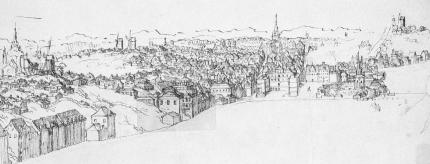  Erik Dahlberg, slutet av 1600-talet
Erik Dahlberg, slutet av 1600-talet
|
I sin Stockholmsbeskrivning från omkring år 1662 har Erik Dahlbergh, själv senare Mariabo, gett en kort karakteristik av Södermalm vid slutet av den första stora regleringsperioden: »Den Södra förstaden eller Södermalm är belägen på nästan en ö, vars näs är försett med en stark fästning och flera skansar. Denna förstad är mycket stor och nära en liten tysk mil i omkrets. Den är till större delen belägen på en upphöjd kulle eller klippa och försedd med många sköna och kostbara hus, stenbyggnader och härliga trädgårdar - bland vilka i |
Beskrivningen gör ett kanske väl ståtligt intryck. Mycket av den gamla kåkstaden med dess fattiga befolkning fanns dock kvar fastän nu inrutad i ordnade kvarter mellan raka gator. En verklig bosättning från adelns sida kom till stånd i ganska begränsad omfattning. I Gerhard Stalhoffs resebeskrivning ett par år tidigare uppges, att på östra delen av malmen då funnos blott 8 stenhus och på västra delen, utom det s.k. Ebba Brahes palats, 23 stenhus, »gode och onde». Åtskilliga av dessa tillhörde borgare och icke adelsmän.
Den egentliga adelsinvasionen på malmen representerades - med några lysande undantag - i första hand av de s.k. malmgårdarna. Som framhållits i ett tidigare sammanhang betecknade ordet, när det började användas i tänkeböckerna från början av 1500-talet, närmast, vad som nu skulle kallas kolonistuga. Även sedan termen från mitten av 1600-talet fått sin sedan vedertagna betydelse, täckte den en mycket skiftande verklighet. Det kunde vara fråga om anläggningar av verklig herrgårdstyp med tillhörande ståtliga trädgårdar - den bristande tillgången på jord och betesmark uteslöt åkerbruk i egentlig bemärkelse - men också om mera anspråkslösa sommarnöjen. Stenhus eller trähusbebyggelse spelade icke någon roll för beteckningen. Mellan "trädgård och "malmgård" uppehålles icke heller någon klar distinktion i det samtida källmaterialet. Att det talas om en trädgård utsluter alltså icke, att det också funnits en bebyggelse på området, så att anläggningen väl motsvarade benämningen malmgård. (Se vidare nedan!)
| Ett starkt framträdande befolkningsinslag på den nyreglerade malmen, också det i överensstämmelse med gammal tradition, voro de inflyttade utlänningarna. Både ekonomiska och religiösa skäl medverkade till att de med förkärlek sökte sig till Södermalm. Ett pittoreskt men växlande inslag utgjordes av de ryska köpmännen, som hade en stödjepunkt för sin handel i de s.k. ryssbodarna vid Stadsgården. En av bodarna begagnades som rysk kyrka. För den hemlösa finska församlingen planerades en egen kyrka, sannolikt på någon plats vid Högbergsgatans norra sida. Att planerna, som icke blevo förverkligade, fortskridit ganska långt, framgår av det temporärt uppdykande gatunamnet »den tillförordnade Finska kyrkogatan». |
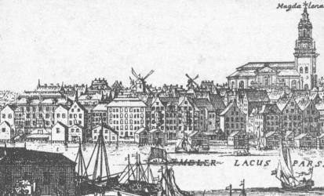  Utsikt från Munkbron över kvarteret Mälaren och trakten krin Maria kyrka. Längst t v De la Gardieska palatset vid Södermalmstorg och där bredvid Loheska sockerbruket. 1702. Utsikt från Munkbron över kvarteret Mälaren och trakten krin Maria kyrka. Längst t v De la Gardieska palatset vid Södermalmstorg och där bredvid Loheska sockerbruket. 1702.
|
|
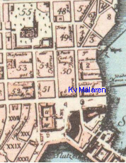 |
Den dominerande utlänningskolonien på Södermalm med de Bescharna och Louis De Geer som
pionjärer var den holländska. Ett länge brännande problem var dess religionsutövning. Den
ortodoxa religionslagstiftningen tillät endast enskild husandakt för främmande trosbekännare med
undantag av att de utländska sändebudens legationspredikanter medgåvos rätt att hålla gudstjänst
för ministern och hans husfolk. Då statsintresset bröt sig mot ortodoxiens renlärighetskrav,
uppstod dock ofta en markant kontrast mellan lagstiftning och lagtillämpning. Som stöd för rätten
att hålla privata huspredikanter åberopade holländarna senare den försäkran om fri
religionsutövning, som Gustav II Adolf skall ha lämnat Louis De Geer vid hans bosättning i
Sverige.
Även om de inflyttade holländarna också bosatte sig i andra delar av staden, markerades Södermalms särställning, genom att de holländska residenterna slogo sig ned där. Van der Nootska palatset, Sankt Paulsgatan 21, hyrdes sålunda av Christan Constantin Rumpf, som anlände till Sverige på hösten 1674. Han köpte sedan ett hus vid Götgatan i kvarteret |
Bebyggelsen vid seklets mitt kring uppfarten till malmen framträder klart på Wolfgang Hartmans Stockholmsgravyr. Tätt utmed stadsgraven lågo fem långsmala hus, av vilka tre, åtminstone senare, tillhörde staden. Stadsgården dominerades av den s.k. »ryssestapeln» eller »ryssgården». Till tjänst för den ryska handeln, som reglerats i Stolbovafreden, lät staden först uppföra bodar i den inre staden, men av utrymmesskäl ville man sedan flytta ut dem till malmarna. Norrmalm var först i åtanke, men 1640 var arbetet i gång på »ryssebodsbyggnaden» i Stadsgården på Södermalm, och anläggningen stod färdig två år senare. Ryssgården utgjordes av ett dussin låga och smala envåningshus, omgivna av en inhägnad, som bestod av ett antal sammanbyggda träbodar med dörrarna vättande in åt gården. Stadens myndigheter voro angelägna om att utrymmet skulle vara tillräckligt, så att ryssarna icke skulle få en förevändning att handla i skutorna. I anläggningen gavs plats även för en primitiv kyrka, såsom redan påpekats: det talas om »den boden, där de hava sin gudstjänst». Från ryssarnas sida förekommo naturligtvis allehanda klagomål över bodarna, som under vintern hyrdes ut som magasin åt stadens borgare. Under handelssäsongerna bör anläggningen ha gett en viss pittoresk karaktär åt stadsmiljön. Till verksamheten var knuten en vägaretjänst, och i 1652 års mantalslängd redovisas som bosatta i malmens östra kvarter Lars Matsson rysstolk och Peter rysstolk. En känd Mariabo, rikshistoriografen Johan Widekindi, specialist på rysk historia, sålde 1678 jämte sina »medparticipanter av det ryska kompaniet» en gård utmed Horns- och Besvärsgatorna, som kompaniet innehaft.
|
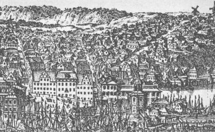  Utsikt över Södermalmstorg. Nedtill t v Södra stadshusets en flygel. Hornsgatan, Brännkyrkagatan, Bastugatan. T h om stadshuset De la Gardieska palatset, Yttre söderport och Slussen. Detalj ur Svecians bild av Stockholm från Skeppsholmen. Kopparstick av W Swidde 1693. Utsikt över Södermalmstorg. Nedtill t v Södra stadshusets en flygel. Hornsgatan, Brännkyrkagatan, Bastugatan. T h om stadshuset De la Gardieska palatset, Yttre söderport och Slussen. Detalj ur Svecians bild av Stockholm från Skeppsholmen. Kopparstick av W Swidde 1693.
|
En ny och ståtligare ryssgård tillkom senare i form av en integrerande förgård till Södra stadshuset.
Möjligen gå planerna på detta byggnadsverk tillbaka till tiden för den stora stadsplaneregleringen, då
staden den 13 mars 1643 »till Stadsgårdens utvidgning» tillbytte sig en tomt vid nuvarande Peder
Myndes backe av Siggestafrun Margareta Ikorn. Byggnaden, ursprungligen en skapelse av den äldre
Tessin, blev svårt brandskadad 1680 och byggdes sedan om av sonen. Ryssgården ödelades vid den nya brandkatastrofen
1694 men byggdes upp igen och tjänade sitt ursprungliga ändamål ända till 1820-talet.
Som tidigare nämnts blev den mera enkla typen av malmgård med huvudsaklig karaktär av trivsamt sommarnöje, en efterföljare till |
I de bevarade almanacksanteckningarna av en tjänsteman i kammarkollegium, Mårten Pedersson Blix, adlad Blixencron, generalkamrerare och slutligen kommissarie och preses i kammarrevisionen, får man några glimtar från malmens exploatering och ett intryck av sommarnöjesatmosfären på det ännu lantligt uppfriskande Söder. På nyåret 1643, då anteckningarna börja på nytt efter ett uppehåll på nio år, är Blixencron, liksom flera av hans närmaste umgängesvänner inom den lägre ämbetsmannavärlden, på spaning efter lämpliga tomter på den nyreglerade malmen. Upprepade gånger, ofta efter aftonsången på söndagarna, tar man sig en spatsertur över Slussen för att bese de nya »Södermalmstomterne». Vid andra tillfällen gör man en promenad runt Fatburssjön eller en roddtur till Skinnarviken med hemväg över malmen; någon gång kan det också förekomma, att Blixencron beger sig ut till malmen till häst. I samband med utflykterna tittar han gärna in hos Hans Marschalk på värdshuset Svanen vid Södermalmstorg.
På våren 1643 hade Blixencron träffat sitt val. Tillsammans med sin vän Hans Brehmer, som redan hade sin malmgårdsfråga löst, beger han sig till Jakob Grundel, byggningsborgmästaren, för att underhandla om köpet. En vecka senare äro alla tre tillsammans med »Ingenieuren» - antagligen Anders Torstensson - ute på platsen, varefter kontraktet undertecknades med säljaren, David Rebener. Den nyförvärvade lilla domänen vid Repslagaregatan blir sedan ett vanligt utflyktsmål under vackra vår- och sommardagar. Man drar ut med familjen eller några vänner, tittar in till varandra, planerar på tomten och har det sommartrevligt. Från en dag i slutet av juli heter det, att vi voro »tillhopa Mistige hele dagen», men samtidigt hann man med att sätta upp det nya planket. Under de närmast följande åren blir det sedan allt mera bekvämt på den lilla anläggningen: det tillkommer en ny byggnad - antagligen den, som sedan kallas lusthuset - en portal reses upp, inomhus målas och sättas upp väggbonader, och trädgården ansas.
Åtskilliga av Blixencrons kolleger, tillhörande den medelklass, som under Kristinas regering arbetade sig upp i karriären och så småningom adlades, återfinnas bland malmgårdsägarna på Södermalm under 1640-talet. Hit hörde sålunda blivande landshövdingarna Ludvig Fritz och Tönnes Langman, generalkrigskommissarien Bengt Hansson Reenfelt, underståthållaren Bengt Baaz Ekehielm, kommissarien Lars Henriksson Landzberg, assessor Erik Johansson Klöfversköld och referendaren Grels Gustafsson, Anders Lindhielms fader. Med dessa sommarnöjesentusiaster från ämbetsverken blandade sig en brokig skara från det burgna borgerskapets led.
Ungefär samtidigt med att adel och borgare byggde sig präktiga stenhus eller skaffade sig trivsamma sommarnöjen på det nyupptäckta Södermalm, började också områdets första industrialisering, ett nytt inslag, som pekade framåt i tiden. Medan vissa hantverksyrken sedan gammalt varit bofasta på malmen, hade där tidigare endast funnits två anläggningar av mera fabriksmässig typ, tegelbruken vid Grind och Horn, båda med traditioner från medeltiden. Nu sökte sig den under stormaktstiden uppblomstrande industrien ut hit, där det fanns god tillgång både på tomtmark och billig arbetskraft. De viktigaste anläggningarna kommo dock att förläggas till östra delen av malmen. Det är betecknande, att befolkningsökningen på Söder under decennierna efter seklets mitt procentuellt är större i Katarinaområdet än i Mariaområdet.
Till de av staten omhuldade industrierna hörde i hög grad textilindustrien, som kunde bidra till att inom landet lösa den nya militärmaktens beklädnadsfråga, en viktig nationell uppgift enligt merkantilistisk tankegång. En av textilindustriens pionjärer - ehuru på ett mera speciellt område - var Jacob von Utenhoff, en inflyttad tysk, som kommit i kontakt med Sverige redan på Gustav Adolfs tid.
|
Utenhoffs planer diskuterades i rådet sommaren 1649. »Sekreteraren Swalch refererade», heter det,
»huru han, som vill introducera vantmakerit, begärar Hans Wachtmesters gård och tomt på
Södermalm». En viss begreppsförvirring tycks ha rått, då diskussionen kom att gälla inrättandet av
vantmakerier, fastän Utenhoffs projekt syftade till ett sidenväveri. Resultatet blev också, att han
erhöll privilegium på att inrätta ett sådant med tillhörande färgeri. Det nya företaget kunde sättas i gång med generöst statligt understöd. Kronan tillbytte sig av Hans Wachtmeister det åstundade tomtområdet, beläget i kvarteret Dykärret mellan Högbergsgatan och Fatburssjön, och överlämnade detta i donation till Utenhoff och hans participanter. Samtidigt erhöll han ett lån på 12.000 rd. med löfte om ett nytt lån på samma belopp efter ett år; båda lånen skulle återbetalas inom tio år. Driften byggde på tillgång till vattnet i Fatburssjön, men platsen var mindre lämplig för bebyggelse. Det till Utenhoff donerade området beskrives senare som »en mycket sumpig ort men av honom sedermera mycket förbättrad och bebyggd». Fabrikationen, som koncentrerades på tillverkning av sammet och plysch, fick aldrig någon större omfattning. |
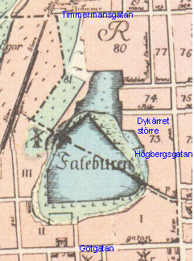 Tillaei karta 1733. Väster uppåt. |
|
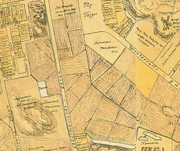  Från en rekonstruktion efter Johan Holms tomtbok 1674, del av Catharina församling. Från en rekonstruktion efter Johan Holms tomtbok 1674, del av Catharina församling.
|
En helt annan betydelse fick det företag, som startades av den inflyttade skotten Daniel Young, adlad
Leijonancker, såsom vi tidigare lärt känna Mariabo från slutet av 1650-talet som ägare av en ståtlig
byggnad vid Södermalmstorg och Mälaren. Det tog också sikte på en fabrikation med större
marknadsmöjligheter. Tillsammans med rådman Hans Olofsson fick Leijonancker 1662 privilegium
att upprätta ett linneväveri, och 1668 fingo de privilegium att också starta ett vantmakeri, d.v.s.
ylleväveri. Året därpå utträdde Olofsson ur företaget, varefter Leijonancker blev ensam ledare.
Åt det Leijonanckerska företaget uppläts ett betydande område på östra delen av malmen, sydväst om nuvarande Vitabergsparken. Huvudbyggnaden i det egentliga manufakturområdet, det enda mera märkliga stenhuset (Malongen) i Katarinatrakten vid denna tid, låg vid dåvarande Stadsträdgårdsgatan, nu Malmgårdsvägen. Driften hade från början lagts upp i stor stil. Under en utländsk resa 1663 anskaffade Leijonancker mästare och gesäller från Hamburg och Holland, |
|
som sedan lärde upp de svenska arbetarna. Enligt hans egna uppgifter, som nog böra
tagas med en viss reservation, voro år 1669 icke mindre än 55 vävstolar i gång och sysselsattes
över 1200 personer, gamla och unga, med att spinna. I varje fall betydde verksamheten det
första betydande inslaget i Södermalms industrialisering. Då den i stor utsträckning såsom
byggande på förlagssystemet hade karaktär av hemindustri - därmed anknytande till gamla
traditioner på malmen - påverkade den befolkningsmässigt även fattigkvarteren i Mariatrakten.
Lorenzo Magalotti, som i sin svenska reseberättelse från år 1674 ägnat stor uppmärksamhet åt Leijonanckers verksamhet, är kritisk både i fråga om hans ekonomiska metoder och produktionens kvalitet. Han ansåg det svenska klädet vara mycket dåligt, då det saknade fasthet och lätt krympte vid väta. Att kvinnlig arbetskraft användes i stor utsträckning observerades av den italienske betraktaren, som även påpekade de låga arbetslönerna. »Man gör dem likväl därmed icke någon stor orätt», anmärkte han i detta sammanhang, »emedan svenskarna äro fiender till mödan, och om man vill att de skola arbeta, är det nödvändigt att de nästan förgås av brist och umbäranden». Ett tredje textilföretag på Södermalm grundades av Niclas Pauli, inflyttad från Schleswig och svensk stamfader för en sedan berömd affärs- och industrisläkt. Vid ankomsten till Sverige år 1667 endast 18 år gammal var han tio år senare |
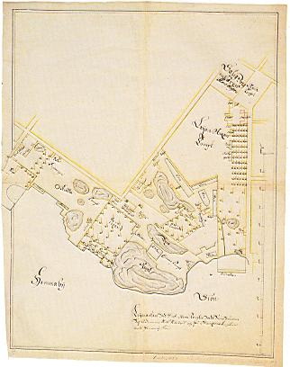  Ritning över medicine doktor Leijonanckars tomter med surbrunn söder om Nytorget omkr 1680. Av tomtboken framgår förnamnet Daniel. Det bör vara den Daniel Leijonancker som tog sig an femtiotalet barn, som fick lära sig spinna vid Danvikens hospital. Ritning över medicine doktor Leijonanckars tomter med surbrunn söder om Nytorget omkr 1680. Av tomtboken framgår förnamnet Daniel. Det bör vara den Daniel Leijonancker som tog sig an femtiotalet barn, som fick lära sig spinna vid Danvikens hospital.
|
|
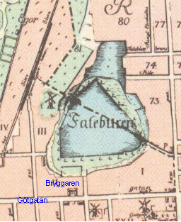 1733 |
framgångsrik ledare av en fabrik med ett fyrtiotal arbetare. Den låg
vid Fatburssjön i kvarteret Bryggaren, alltså inom Katarinaområdet men vid gränsen till Maria
församling. Gården, där fabriken var inrymd, hade ursprungligen byggts av rikspostmästaren Johan
von Beijer, grundaren av det svenska postverket, som fått en tomt upplåten här 1654.
Företaget var ursprungligen ett raspfaktori, d.v.s. sysslade med tillverkning av färgstoffer, vilket förklarar lokaliseringen till Fatburssjön. Senare utvidgades den för fabrikation och färgning av yllevaror. Anspråkslös till sin omfattning i jämförelse med det Leijonanckerska jätteföretaget visade sig den Pauliska fabriken mera stabil än detta och fortsattes efter grundarens död av hans efterkommande.
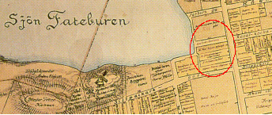  1674 |
Två pionjärindustrier i Sverige inom andra branscher förlades också till Södermalm. För Melchior Jungs år 1641 privilegierade glasbruk hade tre år senare upplåtits en tomt på Munklägret (Kungsholmen), där företaget också kom i gång. Sedan anläggningen 1652 ödelagts av brand, beslöt Jung, som i motsats till de flesta av stormaktstidens industriella pionjärer var infödd svensk, att flytta verksamheten till Södermalm; avgörande var, enligt vad han själv anför, det närmare avståndet till den inre staden. Han inköpte för detta ändamål två sjöbodar på det s.k. Fiskareberget inom Katarinaområdet.
|
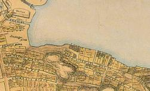 
|
Sedan han med byggningskollegiets tillstånd arbetat tre månader på sin nya hytta, protesterade en granne mot bygget, men tvisten tycks ha lösts på det sättet, att Jung inköpte även dennes tomt. I bouppteckningen efter Jung, som avled 1678, redovisas bl.a. en gård, med ett halvbyggt stenhus vid gatan, »där själva glasbruket är». En viss anknytning till Maria församling hade han haft, då han ägde en gård vid Badstugatan och tidigare också haft en kålgård vid Fatburssjön. Den av Jung introducerade industrien, varav minnet bevarats i gatunamnet Glasbruksgatan, blev icke bofast på Söder. Det Jungska glasbruket flytades av sonen till Nystad i Finland, där det brann ner 1685. |
|
En bestående industriell tradition grundades däremot på västra Södermalm, då sockerindustrien, vars pionjärföretag ursprungligen också legat på Kungsholmen, överflyttade dit. Kungsholmsraffinaderiet hade startats 1647 av Abraham van Eijck, senare känd Mariabo, och hans kompanjon Welam Wesenberg. De ingingo sedan i kompani med Gilius Simons, som 1661 grundat ett nytt sockerbruk, förlagt till Söder. För detta byggdes - antagligen 1663, då ett större kapital ställdes till förfogande av Joachim Pötter Lillienhoff, också han en av spetsarna inom den svensk-holländska köpmanskolonin och senare Söderbo - ett långsmalt stenhus vid Badstugatan, grannhuset till det privatpalats, som är mest känt från Pontus Fredrik De la Gardies ägotid. Som direktör för företaget inträdde 1666 Hans Preuss, senare adlad Ehrenpreuss, som i testamente erhållit sin svåger Gilius Simons andel i kompaniet mot att han övertog dennes skuld till Lillienhoff. Från 1692, då Johan Lohe övertog ledningen, är företaget för en lång tid framåt känt under namnet Loheska sockerbruket. Den ram för bebyggelsen på Södermalm, som utstakats genom den första stadsplaneregleringen, sprängdes på 1660-talet genom en fortsatt expansion. Genom |
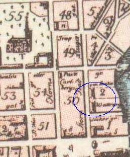 1733 |
|
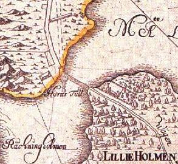 1702 |
Västerut markerades utvecklingen genom den nya trafikled, som nu kom till stånd. En ny väg anlades nämligen till Hornsundet, och i direkt anslutning till den byggdes en bro till Liljeholmen. Tidigare hade funnits en färjförbindelse, som icke alltid kunde uppehållas vid dålig väderlek. Genom ett kungl. brev den 4 november 1668 godkändes stadens förslag att i stället bygga en bro med rätt för staden att uppbära bropengar efter särskild taxa. Arbetet utfördes året därpå under ledning av Tessin och stadsbyggmästaren Sifvert. Kostnaden steg till 8 747 d.s.m.; med tre borgare i staden slöts den 18 maj kontrakt om brons stenläggning. I samband med tillkomsten av den nya vägen och Hornsbron - snart kallad Liljeholmsbron - flyttades tullhuset från sin gamla plats på den tidigare s.k. Åkaremyran till en plats något sydväst om brofästet vid Södermalmslandet. Kammarkollegiet klagade sedan över att tullhuset lagts för långt från bron och att staden dessutom låtit uppföra en stuga - avsedd till bostad för brovaktaren - som skymde utsikten dit. Från stadens sida kunde man emellertid hänvisa till att kollegiet genom kammarrådet Skyttenhielm varit representerat, då platsen utvaldes. |
Den nya expansionen på Södermalm - inom eller utanför det först stadsplanelagda området - bars upp av olika befolkningselement. Ett starkt framträdande inslag utgjordes av representanter för den nya ekonomiska adel, som då hade sin storhetstid. Det ekonomiska livet dominerades av en krets inflytelserika finansiärer, flera inflyttade utlänningar och nästan alla så småningom adlade. Grunden för deras verksamhet var i regel den kombination av privat affärsverksamhet och statliga förvaltningsuppdrag, som utgjorde ett typiskt och ödesdigert inslag i finansadministrationen under förmyndarregeringen och den tidigare Karl XI:s-tiden.
|
I nära samarbete med varandra skapade sig kusinerna Joachim Pötter och Henrik Thun, den förre
adlad Lillienhoff och den senare Rosenström, ett betydande ekonomiskt välstånd. Ursprungligen
Nyköpingsbor bildade de ett handelsbolag i Stockholm, som ägde bestånd till början av 1670-talet,
och förenade med denna verksamhet olika tjänster i kommerskollegium. De voro intressenter i flera av
tidens industri- och affärsföretag samt framstående redare och tillhörde även kretsen av de s.k.
kopparkontrahenterna. Hand i hand etablerade sig de två kompanjonerna också som fastighetsägare på Södermalm. Pötter-Lillienhoff, som var gift med en dotter till Henrik Lohe, inköpte enligt fastebrev den 23 oktober 1667 från arvingarna efter rådmannen Michel Abrahamsson och hans maka en tomt i dåvarande kvarteret Nederland, öster om Fatburssjön. Han lät här uppföra ett förnämligt palats med pilasterindelad fasad i den holländska klassicismens stil, säteritak och en fritrappa vid huvudentrén åt Götgatan. Arkitekt var Johan Tobias Albinus, engagerad i flera betydande byggnadsföretag på Södermalm vid denna tid och själv Södermalmsbo: enligt den Holmska tomtboken från 1679 ägde han en gård med trädgård i kvarteret Grisen mellan Sankt Paulsgatan och Sankt Göransgatan (Wollmar Yxkullsgatan), motsvarande platsen för nuvarande Maria folkskola. |
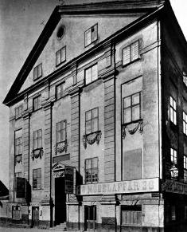 Lillienhoffska palatset 1896 |
Efter en felaktig tradition, bottnande i en oriktig uppgift på Tillaei Stockholmskarta, har det Lillienhoffska palatset länge gått under namnet »Rumpfska huset». Dess identitet klargjordes först i samband med restaureringen 1939. Efter denna framstår den vackra byggnaden vid nuvarande Medborgarplatsen som en av de märkligaste minnesmärkena från 1600-talets Södermalm, nu väl anpassad att tjäna den moderna tidens behov. Till det mest tidstypiska och bäst bevarade av det ursprungliga byggnadsverket hör - utom själva fasaden, som återfått sin ursprungliga fritrappa - vissa delar av inredningen i bottenvåningens paradsvit samt källarrummen i understa souterrainvåningen, nu utnyttjade som serveringslokaler.
Vid denna tid fick den holländska kolonien några av sina viktigaste samlingspunkter på Södermalm. Till skaran, som följde i de Bescharnas och Louis De Geers spår, hörde bröderna Abraham och Jacob Momma Reenstierna, särskilt kända för sina investeringar i den norrländska bruksindustrien men även stora intressenter i så vittutseende företag som arrendet av drottning Kristinas underhållsländer och administrationen av den svenska kronokopparen. Jacob, som var gift med en dotter till myntmästaren Marcus Kock och alltså befryndad med Johan von Wullen, Kristinas holländske livläkare, inköpte 1663 en stor tomt i kvarteret Suggan mellan Sankt Göransgatan (Wollmar Yxkullsgatan) och Gamla Prästgårdsgatan.
|
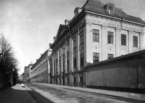 1912 |
Den vackra byggnad i holländsk renässansstil, som Jacob Momma Reenstierna lät uppföra på
denna tomt, är likaledes en av de märkligaste och - trots senare omdaningar - bäst bevarade av de få
kvarstående adelspalatsen från 1600-talets Södermalm, i våra dagar utnyttjat som en del av Maria
sjukhus. Att Albinus varit även det Renstiernska palatsets arkitekt har klarlagts av den senaste
forskningen. Numera försvunna äro de två korta flyglar, som ursprung-
|
För ovanlighetens skull icke affärsman utan militär var Thomas van der Noot, vars namn är knutet till det måhända mest kända av de numera bevarade 1600-talspalatsen på Södermalm. Han kom i svensk tjänst på 1650-talet, avancerade till överste och upphöjdes - genom sin moder i hennes andra gifte nära befryndad med den svenska högadeln - slutligen till friherre. Som måg till den franskfödde Claude Roquette, adlad Hägerstierna, drottning Kristinas hovskräddare, köpman och hovleverantör, blev han säkerligen tidigt väl hemmastadd på Söder, då svärfadern från 1650 ägde en stor trädgård, antagligen bebyggd med en malmgård, belägen vid Hornsgatan i kvarteret Gropen.
|
Själv inköpte van der Noot år 1671 två tomter i kvarteret Paris i hörnet av Sankt Paulsgatan och
Björngårdsbrunnsgatan (Bellmansgatan), tillsammans upptagande kvarterets hela längd mot
sistnämnda gata. Vem som kan ha varit arkitekt till den utsökt vackra byggnad i typisk holländsk stil,
som bör ha stått färdig till det yttre redan hösten året därpå, är en omdiskuterad fråga. Naturligtvis är
det möjligt att byggherren hämtat ritningarna från Holland. Det har emellertid visats, att den ansvarige
arkitekten för stuckaturerna, som utfördes av de kända bröderna Carove, varit Mathias Spihler, och
därmed kommer också dennes svärfar, Jean de la Vallee, Riddarhusets arkitekt, in i bilden. Något
bestämt svar på frågan om van der Nootska palatsets konstnärlige upphovsman har emellertid icke
kunnat ges.
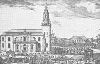  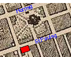 |
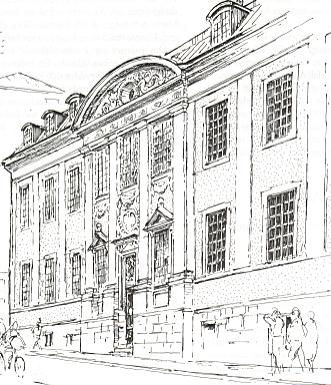 |
I allra främsta ledet bland förmyndartidens namnkunniga kapitalister stodo Wilhelm Böös Drakenhielm och Börje Olofsson Cronberg, båda typiska företrädare för den kombination av statstjänst och privat affärsverksamhet, som i mycket förklarar de meteorliknande karriärerna inom finansvärlden vid denna tid.
Av de två närstående affärsvännerna var Drakenhielm den, som först skaffade sig fastighetsintressen på Södermalm. Hans första förvärv gällde en stor hörntomt i kvarteret Rosendal, begränsad av Hornsgatan och Maria kyrkogård, på vilken han fick fasta 19 december 1660.
| Det är svårt att tänka sig, att icke Drakenhielms byggintresse också skulle ha kommit till uttryck på hans nyförvärvade tomt i Rosendalskvarteret. I varje fall på 1680-talet reste sig här det präktiga stenhus, som senare är känt under namnet stora Daurerska huset, Mariatraktens minnesrikaste byggnad, som stod kvar ända till 1901. Det ligger nära till hands att antaga, att byggnaden går tillbaka till den Drakenhielmska ägotiden. Till de celebriteter, som bott i huset, hör i så fall också Drakenhielms måg, Erik Dahlbergh, senare bosatt i granngården, det s.k. lilla Daurerska huset. Drakenhielm avled på nyåret 1676, och i samma års mantalslängd står han som »salig» redovisad i kvarteret Rosendal för en "egen gård, vilken överste Dahlberg åbor". |
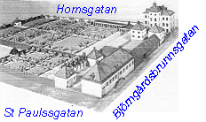 
|
|
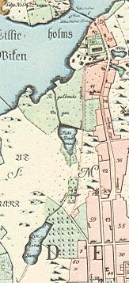 
|
Till gården i Rosendalskvarteret hade Drakenhielm senare lagt en stor domän i kvarteret
Krukomakaren. Den hade 25 juni 1667 försålts av staden till borgmästare Johan Prytz, men genom
hans död blev köpeskillingen aldrig betald varför änkan året därpå transporterade egendomen på
Drakenhielm. Området bestod till en stor del av »höga berg, som är odugelige» och lämpade sig
följaktligen icke för bebyggelse. Det var i stället behovet av fiskdammar, ett nödvändigt tillbehör i en
1600-talsmagnats livsföring, som tydligen låg bakom det Drakenhielmska förvärvet. Området, som i
den Holmska tomtboken betecknas som Drakenhielms »store träägårdh och carpedammar», fick
efter en senare ägare, Frantz Zinck, det ännu bibehållna namnet
Zinkens damm, ursprungligen närmast syftande på den tarmliknande utbuktning av Fatburssjöns
utflöde, som tydligt framträder ännu på Tillaei karta.
Om Zinkensdamms historia kan föras tillbaka till Wilhelm Drakenhielm, har Börje Cronberg däremot anknytning till det område, som ännu bevarar det gamla namnet Tantolunden. Drakenhielm var dock den, som också här visade vägen. År 1663 hade borgmästaren Erik Rosenholm fått sig tillmätt som fiskedike ett område vid Hornsviken »uti Grinds hage vid Tantos tomt». Lägenheten övertogs 1667 av Drakenhielm, som året därpå transporterade den på Cronberg. Senare förvärvade denne också Tantos tomt och visade sig intresserad för områdets ytterligare arrondering. I oktober 1671 infann sig ett ombud för räntmästaren i byggningskollegiet för att efterhöra »om ännu var något övrigt vid Tantos tomt på Södermalm». Det är dock icke känt, att denna framstöt gav något resultat. |
Det namn, som för framtiden kom att knytas till detta område, går liksom Zincks icke tillbaka på någon person, som är mera allmänt känd eller spelat någon bemärkt roll i traktens historia. Om Hans Tanto (Danto), som gett namn åt kvarteret och 1700-talets bekanta sockerbruk, liksom åt nuvarande Tantolunden, är ingenting annat känt, än att han under senare hälften av 1600-talet var fastighetsägare på Södermalm. Utom den tomt, som sedan övertogs av Cronberg, innehade han en gård vid Besvärsgatan, som åberopas i ett fastebrev av den 15 november 1673.
Vid den tid, då Cronberg gjorde sina investeringar i Tantområdet, ägde han också en malmgård i kvarteret Krukomakaren den andra (större), nordost om Drakenhielms stora trädgård. År 1670 köpte han sedan en stor trädgårdstomt på andra sidan Krukomakaregatan; den låg i kvarteret Mullvaden den andra mellan nyssnämnda gata och Hornsgatan, upptagande mellersta delen av kvarteret och till omfånget ungefär hälften av detta. Han förvärvade sedan också den västra angränsande trädgårdstomten i samma kvarter. Då båda dessa tomter voro bebyggda, kom Cronberg alltså till sist att inneha tre, bredvid varandra liggande malmgårdar i området öster och nordost om nuvarande Zinkensdamms idrottsplats.
De Cronbergska domänerna hörde säkerligen, som sommarnöjen betraktade, till de ståtligast utrustade av 1600-talets malmgårdar på Söder. Ett inventarium, upprättat några år efter ägarens död, då egendomarna redan börjat förfalla, ger ännu ett intryck av massivt välstånd; redovisningen gäller »söderste malmgården», förmodligen den större i kvarteret Mullvaden." Till anläggningen har hört ett lusthus och stall med vagnshus. I huvudbyggnaden fanns i salen »en gammal himmel av gult och rött taft», och väggarna voro klädda med randigt franskt tyg. Möblerna voro till största delen i ek. Till porslinsuppsättningen hörde 35 stycken blå och vita holländska fat. Samlingen av tavlor var synnerligen rikhaltig, också den med en tidstypisk inriktning mot den holländska smaken, även karakteristisk för ägaren personligen. Redovisningen upptar, utom tre kungliga konterfej, ett flertal större eller mindre »holländska schillerier med svarta eller förgyllda ramar» däribland ett »halfnaket gwinfolcks Schillerij» -- samt dessutom bl.a. sju kopparstick.
|
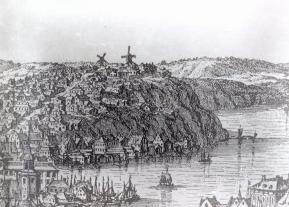 Vy över Skinnarviken och Skinnarviksberget 1688. Här låg 200 år senare Münchenbryggeriet. |
Söder Mälarstrand, strandgatan mellan Slussen och Långholmen, är till största delen en skapelse av människohand, åstadkommen genom bergsprängning och utfyllningar och till hela sin sträckning fullbordad först i början av vårt eget århundrade. I äldre tid fanns endast här och var en smal remsa av fast mark, som skilde de brant stupande bergmassiven från Mälarens vatten. Under förra hälften av 1600-talet inskränkte sig bebyggelsen till höjderna och strandlinjen närmast Slussen; den första regleringsplanen hade respektfullt gjort halt inför Skinnarvikens »ointagliga berg». Området var dock icke helt dött. Vid Skinnarviken fanns en lastageplats, knutpunkten på denna sida för roddartrafiken mellan Munklägret (Kungsholmen) och Södermalm. Mitt inne i det skyddade Pålsundet låg en annan sådan stödjepunkt för sjötrafiken. Man kan förutsätta, att kring dessa platser uppstått några enkla vägförbindelser och en mindre kåkbebyggelse av allra primitivaste slag. |
Det nuvarande s.k. Heleneborgsområdet lades första gången under kultur genom Jonas Österling, verkställande direktören i det länge mycket indräktiga tobaksmonopolet. Österling, som under sin storhetstid residerade i det Tungelska huset på Blasieholmen, gjorde sina första investeringar på Södermalm i mitten av 1660-talet. Han förvärvade 1664 en gård mellan Hornsgatan och Besvärsgatan, granngård till Hägerstiernas stora trädgårdstomt, uppfyllande största delen av kvarteret Gropen. Året därpå arronderade Österling sin nyförvärvade domän med två tomter i kvarteret Ulven.
Efter att 1668 ha sålt sin malmgård vid Hornsgatan till källarmästaren Verner Schmer förvärvade Österling året därpå en »tomt vid sundet gent emot Långholmen» . Detta till utsträckningen mycket betydande område, omfattande i dåtida mått icke mindre än 163 765 kvadratalnar, låg mitt emot östligaste delen av Långholmen och motsvarar i våra dagar området mellan Pålsundet, Varvsgatan, Högalidsgatan och Pålsundsgatan. Det billiga priset till staden, i runt tal 300 speciedaler, förklaras av att området ansågs tämligen värdelöst ur bebyggelsesynpunkt; i den Holmska tomtboken från 1679 står antecknat, att där alltså före den Österlingska tiden - »mestadels haver varit berg och oländig mark». I nordöstra hörnet av tomten, nedanför nuvarande Heleneborg, låg den ovan nämnda lastageplatsen. Tomten följde i norr sträckningen av den väg, som löpte till Långholmsbron och i väster avtagsvägen, som grenade ut sig till lastageplatsen.
Det kan tagas för givet, att Österling med det stora tomtförvärvet vid Pålsundet avsåg att skapa åt sig en ny, mera herrskapsliknande malmgård, ehuru planerna tills vidare fingo vila. Måhända tog han också sikte på en framtida anläggning där av industriell typ. Frågan om områdets utnyttjande blev plötsligt aktuell på våren 1672 av en särskild anledning.
|
Nyssnämnda år den 23 april drabbades tobakskompaniets fabrikslokaler i Stockholm av en
förhärjande eldsvåda. Skadorna blevo så betydande, att det icke ansågs möjligt att återställa spinneriet
i användbart skick. I denna situation riktades uppmärksamheten på Österlings outnyttjade
Södermalmstomt. Tanken, som väl närmast kom från Österling själv, vann de övriga kontrahenternas gillande. I ett den 13 maj uppsatt kontrakt överenskommo intressenterna i
tobakskompaniet att på Österlings tomt mitt emot Långholmen »till spinneri och tobaksnederlag
bygga och uppsätta packhus och andra byggningar, så många som till samma verk behövas och nödiga
synas vara». Hela kostnaden för anläggningarna skulle bestridas av kompaniets gemensamma kassa.
Långholmen hade ingått i de stora markområden, som genom ett kungligt donationsbrev den 27 mars 1647 överlämnats till staden. Den enda bebyggelse, som då fanns, voro tullhusen vid en vik på holmens norra sida, tillkomna i samband med lilla tullens inrättande 1622. Den förste pionjären för Långholmens exploatering var Joachim Ahlstedt, en gründertyp av samma slag som Österling. |
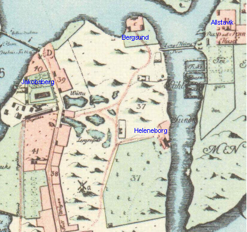 1733 |
Västra udden av Södermalm, det senare Bergsundsområdet mitt emot Reimersholme, skänktes 1671 av borgmästare och råd till vice presidenten Arvid Ifvarsson Natt och Dag men övergick snart till inspektoren Nils Bengtsson Figrelius, sedan överinspektor för salpetersjuderierna och adlad Gripendahl. I senare handlingar har den Gripendahlska egendomen lokaliserats på olika mer eller mindre klargörande sätt - vid ett tillfälle alldeles felaktigt som belägen på Långholmen - men tomtens läge och utsträckning framgår alldeles klart av designationen i den Holmska tomtboken. Gripendahl lät här uppföra en malmgård, av vilken numera inga spår äro bevarade. Tydligen var det en ganska ståtlig anläggning i stil med Österlings och Ahlstedts. I ett värderingsinstrument från år 1701, där byggnaderna beskrivas, säges, att på dem »en stor kostnad är nedlagd».
Den Österlingska domänens motsvarighet vid norra strandlinjen, det mot Liljeholmen vättande området, där på 1700-talet egendomen Jakobsberg grundades, hade ända sedan medeltiden haft sin särskilda karaktär genom det där belägna tegelbruket med den tillhörande stora tegelbruksängen. För tegeltillverkningen bör det ha varit goda konjunkturer under den stora byggnadsperioden på Södermalm, men ändå växlade arrendatorerna ofta i mitten av århundradet.
|
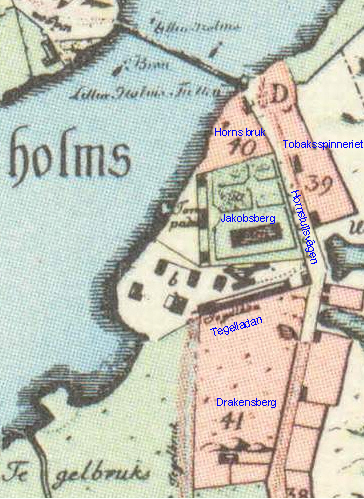 |
Genom den nya trafikleden till Liljeholmen fick det här ifrågavarande området ett nytt attraktivt
intresse, särskilt med tanke på möjligheterna till lönande gästgiverirörelse. Tidigare hade guldslagaren
Hans Laurentz en gård vid själva brofästet med rätt att hålla vinskänkeri; efter brons tillkomst fick han
också övertaga uppbörden av bropengarna på arrende. Efter tillkomsten av den nya Hornsvägen
anlade Melchior Schipman 1669 ett värdshus med namnet Draken, beläget vid själva vägen, öster om
tegelladan. Ungefär samtidigt förvärvade rådman Johan Larsson Laurinus, ivrig fastighetsspekulant på
det nya Södermalm, granntomten till den Laurentzska gården. Då han den 4 november 1670 fick fribrev på tomten, sades han ha nedlagt stor kostnad på denna, som tidigare var »mycket bergig och stenig». Redan 1673 sålde han gården till skräddaren
Jöns Krook. Då Schipman startade värdshuset Draken vid Hornsvägen, tycks han tidigare ha innehaft en källare med samma namn i hörnhuset mellan Österlånggatan och Drakens gränd; han har alltså överfört namnet därifrån till sitt nya locus på Söder. Efter Schipmans död 1671 fortsattes källarrörelsen i Gamla staden av hans änka, medan Draken på Söder övertogs av en person vid namn Michael König. Två år senare gifte änkan Schipman om sig med sockerbagaren Niclas Voigtländer, som nu även blev intresserad av att etablera sig som källarmästare. Under en kortare tid tycks han ha drivit källaren Hamburg vid Götgatan i hörnet av nuvarande Folkungagatan, den genom tiderna mest namnkunniga av Söders alla krogar. |
König, som utmanövrerats från sin hantering, lyckades först hyra den Laurentzska gården vid brofästet för att fortsätta rörelsen där, men blev efter en kort tid uppsagd av ägaren. Han fick då hyra granngården, som 1675 övergått från skräddaren Krook till hans fordringsägare, handelsmännen Jöns Therlow och Johan Prestbeck, två representanter, fastän av det mindre formatet, för den nya ekonomiska uppkomlingsklassen och bl.a. leverantörer av livsmedel till hovet.
Nu ingrep Voigtländer, åberopande det exklusiva privilegium att hålla värdshus i denna trakt - bortsett från Hans Laurentz tidigare rörelse - som Draken från början utrustats med. Han vann också gehör hos borgmästare och råd, vilket föranledde Königs hyresvärdar att klaga på högsta ort: de hävdade att deras gård inte passade till någon annan hantering än vinskänkeri, varför den, sedan rörelsen förbjudits där, nu måste »stå öde och för fäfot oss till befarende ruin». Striden slutade med att magistraten 1681 kunde bevilja Therlow och Prestbeck den önskade rättigheten, sedan rörelsen på Draken lagts ned.
Från 1670-talet är det för första gången möjligt att få en detaljerad helhetsbild av bebyggelsen och befolkningsförhållandena på Södermalm, tack vare de två källor, som då föreligga, dels den av Johan Holm upprättade tomtboken, för Mariaområdet daterad till 1679, och dels mantalslängden för år 1676. Den sistnämnda, överlägsen alla tidigare redovisningar av motsvarande slag, har visserligen, såsom numera påvisats, en del luckor men behåller ändå sitt stora värde genom den bild vi här få av befolkningens lokalisering och sociala struktur vid en bestämd tidpunkt.
|
Längden har utnyttjats för ett ingående studium av sistnämnda förhållanden i en undersökning av
Meyerson, till vilken här hänvisas. Bebyggelsen på Södermalm år 1676 omfattade enligt denna
källa, som här kan anses fullt pålitlig, 1 555 gårdar och hus. Av dessa lågo 728 i västra och inre
kvarteren - tillsammans praktiskt taget motsvarande Maria församling - och 827 i Katarinaområdet. Stenbebyggelsen var nästan helt och hållet begränsad till Maria och där koncentrerad till kvarteren kring Södermalmstorg och kyrkan. Vid sidan av de relativt fåtaliga adelspalatsen kantades nedre delarna av Horns- och Götgatorna av enklare stenhus, bebodda av borgerskap och annan medelklass. Även om malmens karaktär av bostadsområde är långt starkare markerad än tidigare, rymdes fortfarande ett icke obetydligt inslag av kvardröjande lanthushållning. På 3 061 hushåll räknades 237 hästar, 216 kor, 183 svin och 7 getter. För karaktäriseringen av den sociala miljön kan bortses från hästarna, då dessa i stor utsträckning voro behövliga för vissa yrkesutövare. Däremot är det betecknande, att på 65 invånare fanns en ko och på 80 invånare ett svin, en mycket betydande minskning i jämförelse med förhållandena ett halvt århundrade tidigare. Några mera säkra hållpunkter för beräkning av Stockholms folkmängd föreligga först från senare hälften av 1600-talet. Siffran i Schering |
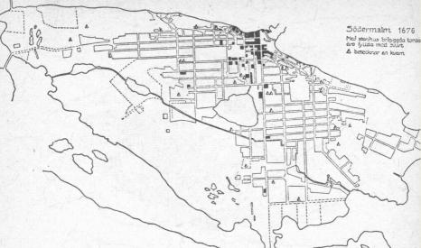  Med stenhus begyggda tomter på Södermalm år 1676. Med stenhus begyggda tomter på Södermalm år 1676.
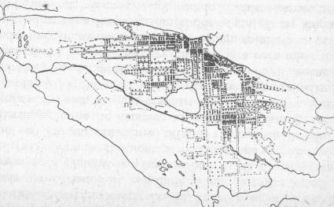  Befolkningens fördelning på Södermalm år 1676. Varje prick betecknar 10 personer. Befolkningens fördelning på Södermalm år 1676. Varje prick betecknar 10 personer.
|
I fråga om den bofasta befolkningens lokalisering är det icke överraskande att finna, att bosättningsområdet för den mera burgna delen i stort sett sammanfaller med stenbebyggelsens utbredning. Det industriella inslaget hade vid denna tid försvagats genom det Leijonanckerska företagets tillbakagång. De övriga textilfabrikerna, sockerbruket, tobaksspinneriet mitt emot Långholmen samt de gamla tegelindustrierna vid Horn och Grind gåvo sin speciella men genom företagens begränsade omfattning icke särskilt starkt framträdande karaktär åt befolkningsbilden.
Inslaget av holländare och finnar i Södermalms befolkning var fortfarande markant. På det lantliga Söder bodde halva antalet av stadens trädgårdsmästare. Kring de talrika väderkvarnarna finner man helt naturligt mjölnare och bagare. Bryggare och brännvinsidkare voro talrikt företrädda och fiskarna hade sedan gammalt ett centrum på östra delen av malmen, i kvarteren kring Glasbruksgatorna. Mycket framträdande voro de yrkeskategorier, som hade gemenskap med järnvågen, slussen och de närbelägna hamnarna: mätare, packare, vägare, tullbesökare, transportarbetare av olika slag och de talrika järnbärarna. Örlogs- och handelsflottans folk, skeppare, styrmän och båtsmän, utgjorde fortfarande ett starkt markerat inslag i Söderbefolkningen.
|
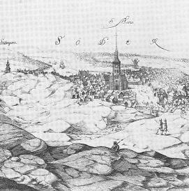  Maria Magdalena och trakten däromkring sett från Skinnarviksberget. Detalj ur S. von Vogels kopparstick 1647. Maria Magdalena och trakten däromkring sett från Skinnarviksberget. Detalj ur S. von Vogels kopparstick 1647.
|
Bakom västra Södermalms ståtliga fasad av präktiga stenhus gömde sig proletärkvarteren i
grannskapet av Skinnarviksbergen med dess brokiga och bizarra persongalleri. I mantalslängdens
rättframma yrkesbestämningar framträder särskilt tydligt ett kvinnligt proletariat av ensamma
soldathustrur, utfattiga båtmansänkor och andra. Man sökte dra sig fram »med sömmande» eller
med »att väva och spinna» eller » lappa kläder». Någon »går med nålar och säljer», en annan
»brukar göra viskor i skogen», en tredje »brukar föda sig med att bära tegel på skutorna» -
fortfarande var denna tunga sysselsättning ett icke ovanligt kvinnoarbete. Om en kvinna heter det,
att hon »arbetar, var hon får». I kvarteret Kattrumpan redovisas »2 gamla käringar, som ibland
tigga och stundom arbeta», och i kvarteret Viggen »en lös kona med sin stora dotter, som håller ett
elakt leverne». I en del fall står antecknat, att vederbörande »får kyrkiones pengar», d.v.s. åtnjöt
fattighjälp i den form, som då stod till buds.
De starka, ofta skärande ekonomiska och sociala kontrasterna utjämnades för en tid genom reduktionerna och räfsterna under den senare Karl XI:stiden. Hur hårt dessa - och då i första hand den mångförgrenade räfstepolitiken |
Så försvann redan med Karl XI:s tid mycket av den forna glansen kring stormaktstidens Södermalm, och efter reduktionen och de stränga räfsterna följde pesten och de karolinska nödåren Först sedan landet hämtat sig från dessa svåra prövningar skapades förutsättningarna för en ny uppblomstring.
Lars Mylianders kyrkoherdetid. Församlingsdelningen år 1654.